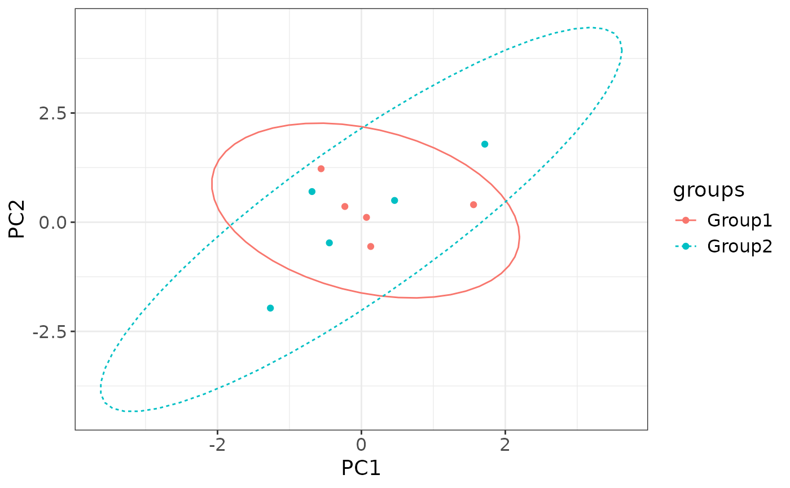
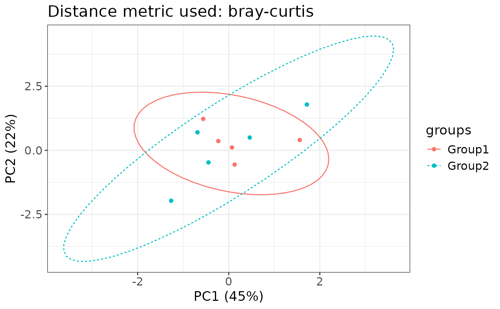

Creates an ordination plot pre-computed principal components from wcmdscale.
This function is built into the class omics with method ordination() and inherited by other omics classes, such as;
metagenomics and proteomics.
Arguments
- data
A data.frame or data.table of Principal Components as columns and rows as loading scores.
- col_name
A categorical variable to color the contrasts (e.g. "groups").
- pair
A vector of character variables indicating what dimension names (e.g. PC1, NMDS2).
- dist_explained
A vector of numeric values of the percentage dissimilarity explained for the dimension pairs, default is NULL.
- dist_metric
A character variable indicating what metric is used (e.g. unifrac, bray-curtis), default is NULL.
Value
A ggplot2 object to be further modified
Examples
library(ggplot2)
# Mock principal component scores
set.seed(123)
mock_data <- data.frame(
SampleID = paste0("Sample", 1:10),
PC1 = rnorm(10, mean = 0, sd = 1),
PC2 = rnorm(10, mean = 0, sd = 1),
groups = rep(c("Group1", "Group2"), each = 5)
)
# Basic usage
ordination_plot(
data = mock_data,
col_name = "groups",
pair = c("PC1", "PC2")
)

# Adding variance/dissimilarity explained.
ordination_plot(
data = mock_data,
col_name = "groups",
pair = c("PC1", "PC2"),
dist_explained = c(45, 22),
dist_metric = "bray-curtis"
)
